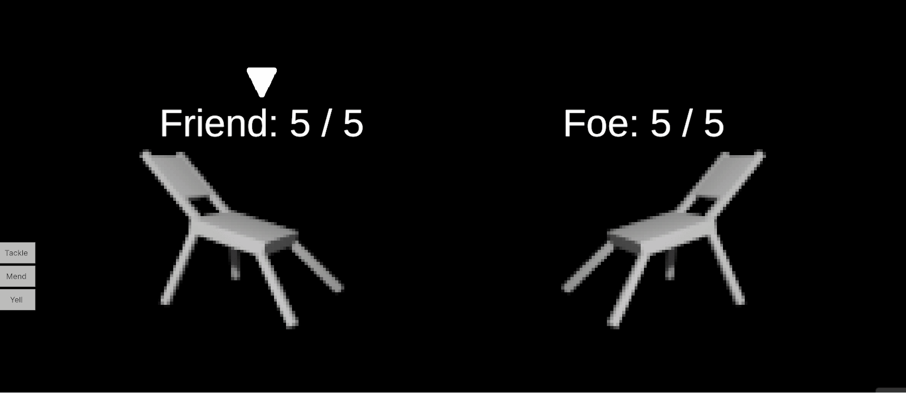

Furniture Pokemon #2.
Something Visual!
I'm experimenting with what this game could look like. Here's a facsimile of a chair I put together in Blender. I really like the "crouched" pose I was able to acheieve here. It has an encouraging amount of character for being so simple.
I didn't stop there though. I wanted CRUNCH. I fought valiantly against the tyranny of fidelity. This shader pixilates the rendered image of the chair.
Something Functional!
You might recall from last time that I chose the actions performed by both combatants. I've given foes the ability to choose for themselves. I was a little bit trepidatious going into this work but it turned out to be pretty easy. I’m really proud of myself for building such a robust battle system. The battle system doesn’t know the difference between a real player’s choice and an artificial player’s choice so I could easily put an artificial player on both sides of the battle and watch them duke it out. This sort of thing is notoriously tricky to do if you are relying on hardcoding a bunch of player logic.
The buttons also show the action name.
I also spruced up the animations a bit.

That's all for now. Thanks for reading, friends.